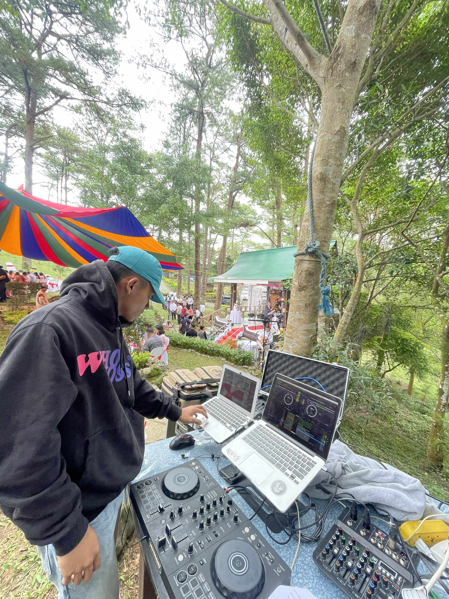

Ruel Lumang-ay

Summary
I am a dedicated part-time student pursuing a Bachelor of Science in Information Technology, with hands-on experience as a Sound System Technician at AUDIOCENTRIX. I am skilled in operating, setting up, and troubleshooting audio equipment for events. I am reliable, detail-oriented, and eager to further develop my technical and IT-related skills.
Education
Bachelor of Science in Information Technology
University of Kings College of the Philippines
Currently Enrolled
Work Experience
Sound System Technician – AUDIOCENTRIX
Part-Time:
- Set up, operated, and dismantled sound systems for various events
- Monitored audio levels to ensure clear and balanced sound quality
- Performed basic troubleshooting and maintenance of audio equipment
- Worked closely with team members and event coordinators
- Ensured equipment safety and proper handling at all times
Technical Skills
- Sound System Setup & Operation
- Basic Audio Troubleshooting
- Computer Hardware Basics
Soft Skills
- Good Communication Skills
- Teamwork and Collaboration
- Problem-Solving
- Willingness to Learn
Other